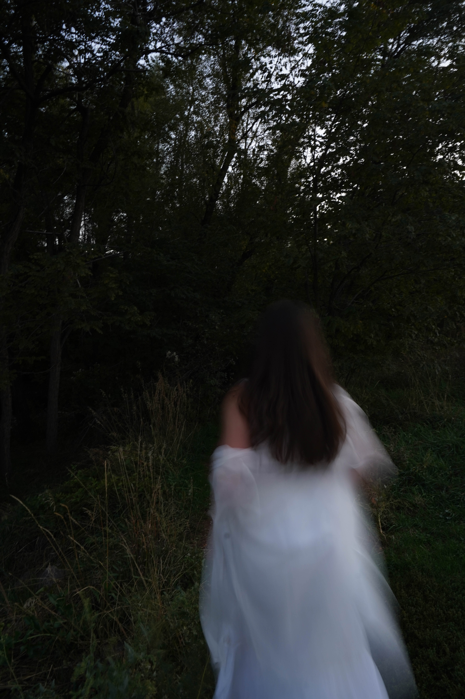
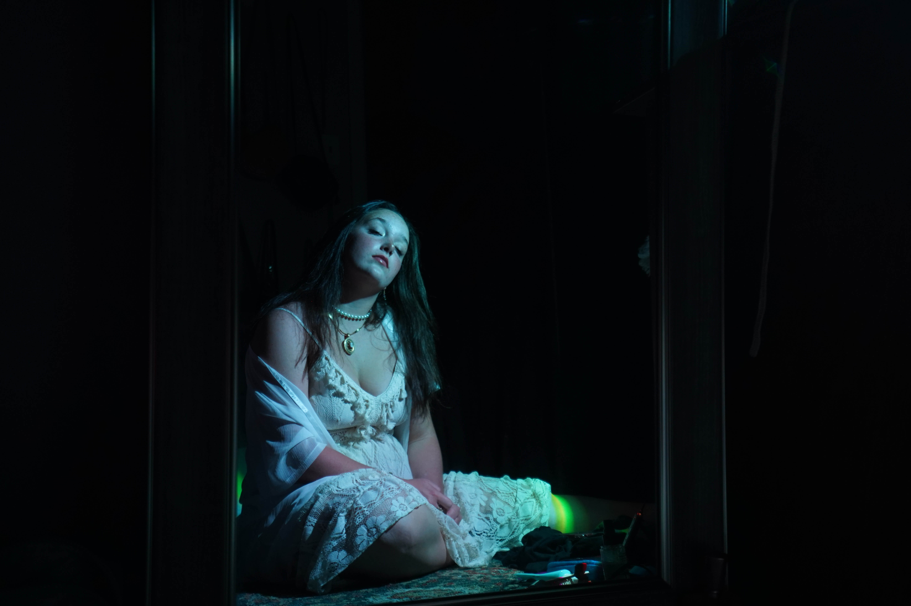
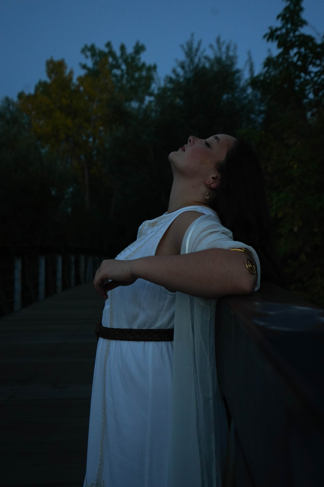
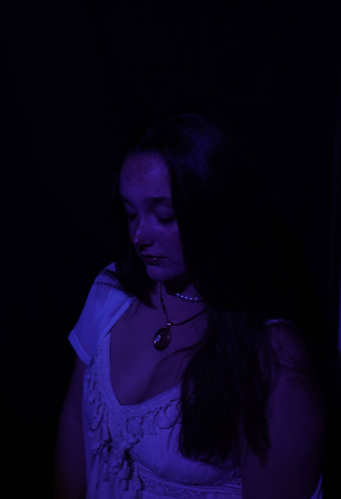
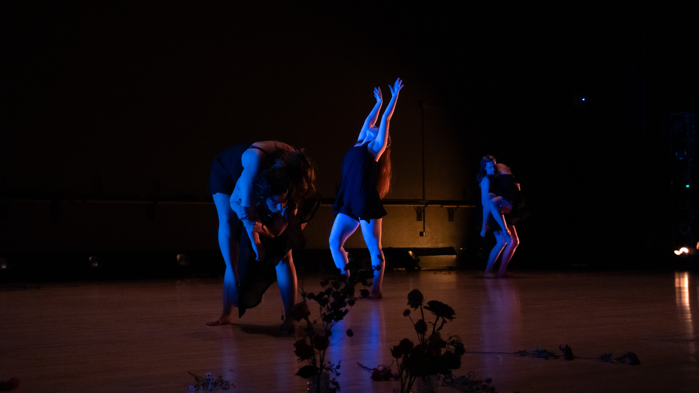
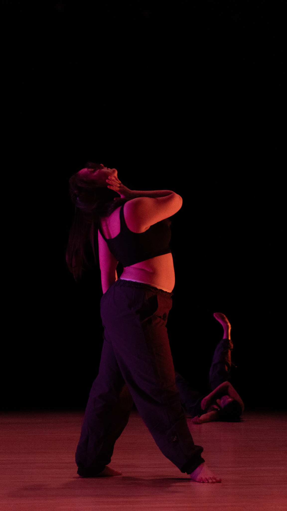
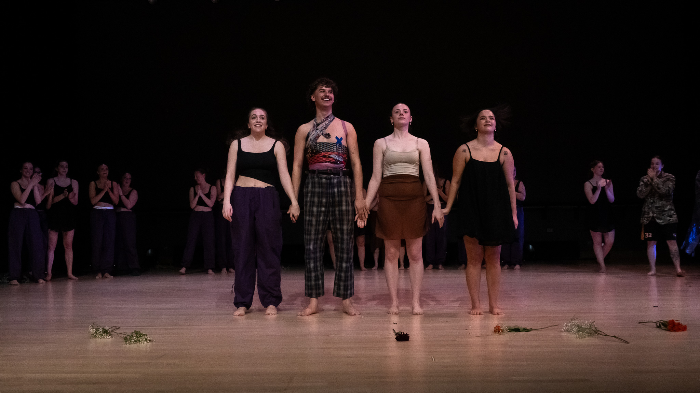
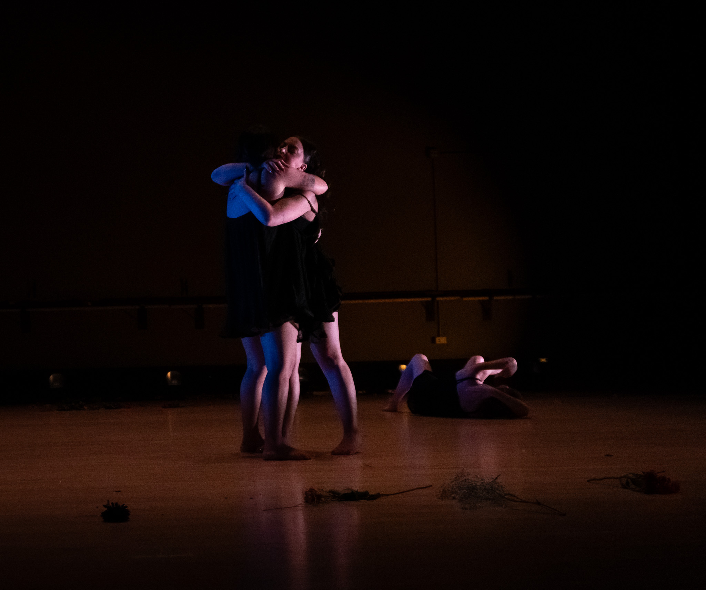
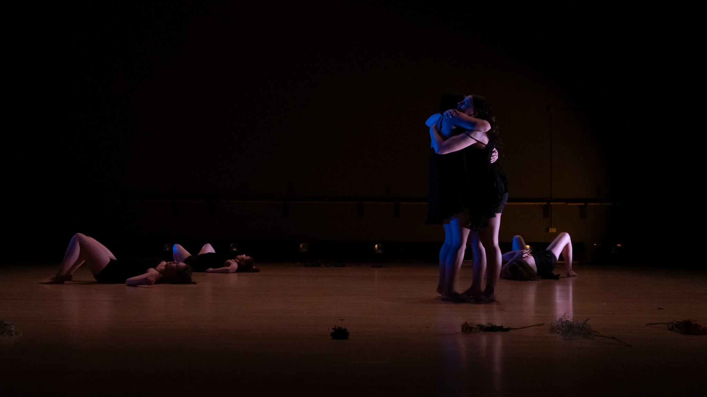
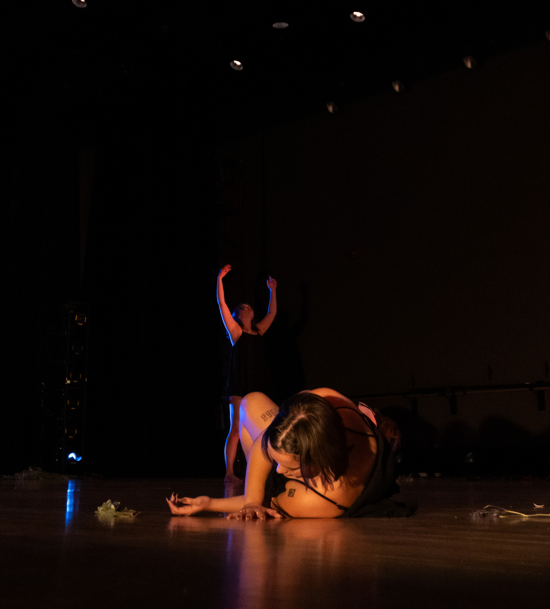

Artistic Photoshoot
Model Skyler Martin
This photo shoot demonstrates an ability to establish and execute a cohesive aesthetic through multiple visual approaches. It pushes the creative boundaries in photography through intentional use of lighting, focus, and model arrangement, resulting in images that are both expressive and concept-driven.




Senior Photoshoot
Model Cole Eberhart
This photo shoot demonstrates strong foundational skills in classic photography, producing clean, well-composed images in outdoor settings. It highlights the ability to select visually compelling locations and utilize natural lighting effectively to create clear and aesthetically pleasing photographs.


Live Dance Photoshoot
Unknown
This photo shoot highlights my ability to capture clear and well-lit images during live performances. I focus on preserving the energy of the movement while maintaining details, accurate color, and lighting in changing stage environments. Whether working with fast movement, dramatic spotlights, or low‑light conditions, I ensure every image reflects the atmosphere of the performance and the personality of the artist.





